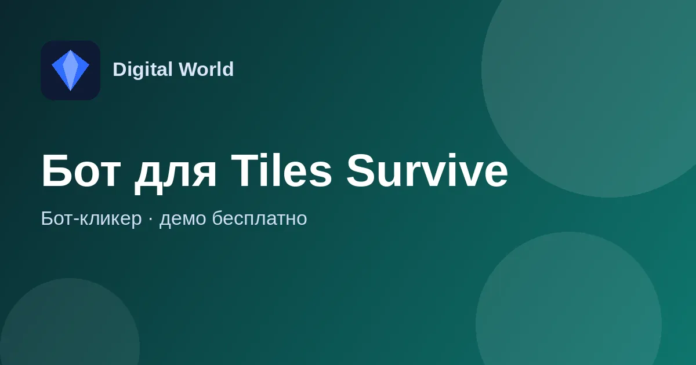

Коды Tiles Survive: рабочие подарочные коды на ноябрь 2026
Все действующие подарочные коды Tiles Survive! в одном месте — со сроками, инструкцией по вводу и списком уже истёкших кодов. Обновлено 6 ноября 2026.

Действующие коды Tiles Survive
THANKS40MLN
Подарок в честь 40 млн скачиваний. Действует до 22 ноября 2026, 23:59 UTC (02:59 мск 23 ноября).
HALLOWEEN2026
Хэллоуинский подарок. Действует до 13 ноября 2026, 23:59 UTC.
TS777
Постоянный код без объявленного срока: самоцветы и ресурсы.
TS888
Постоянный код без объявленного срока: самоцветы и ускорения.
TS999
Постоянный код без объявленного срока: самоцветы, жетоны найма, ускорения.
Коды вводятся с учётом регистра — копируйте их как есть, без пробелов. Каждый код срабатывает один раз на аккаунт.
Как ввести подарочный код в Tiles Survive
- Откройте игру и нажмите на свой аватар в левом верхнем углу.
- Перейдите в «Настройки».
- Выберите пункт «Подарочный код» (в некоторых версиях он спрятан под «Ещё»).
- Вставьте код и нажмите «Подтвердить».
- Заберите награду во внутриигровой почте.
Истёкшие коды Tiles Survive
Эти коды больше не принимаются: TILESCHILD26, THANKS30M, SUMMER2026, CAT0808, HUGDAY2026, FATHERSDAY26, EIDALADHA2026, THANKSMOM, WORKPLAYWIN, EASTER2026, NOTAJOKE, STPADDY2026, SPRING2026, LOVE2026, TS20251117, MERRYXMASTS, TSONEYEAR.
Почему код Tiles Survive не работает?
Чаще всего код уже истёк, вы его уже вводили на этом аккаунте или при вставке попал лишний пробел. Проверьте регистр букв и срок действия в списке выше.
Где брать новые коды?
Разработчик публикует их в официальных соцсетях игры (X, Facebook, Discord) к праздникам, обновлениям и рекордам по скачиваниям — обычно 1–3 кода в месяц. Эта страница обновляется раз в неделю.
Бывают ли генераторы кодов или взлом самоцветов?
Нет. Сайты с «генераторами самоцветов» и взломанными версиями — обман, они могут украсть аккаунт. Честный способ получить бесплатные ресурсы — официальные коды.